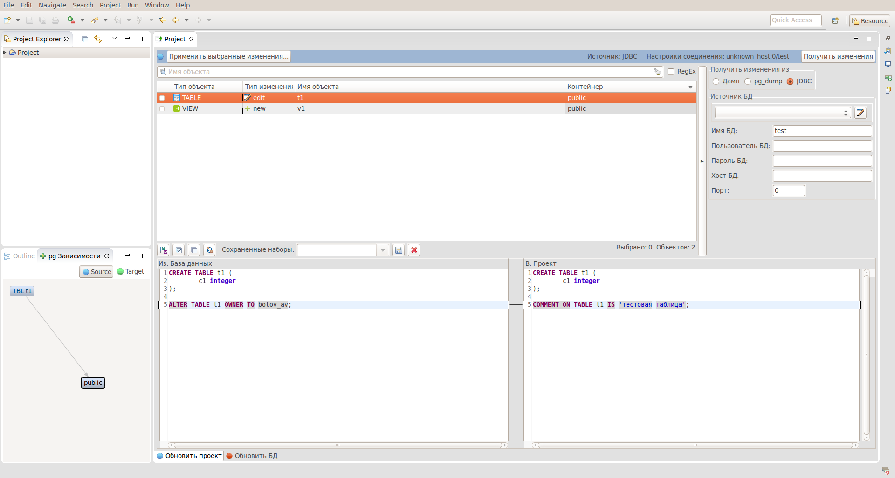
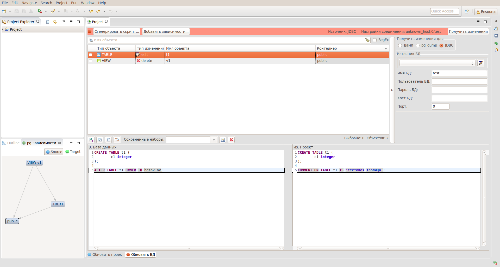
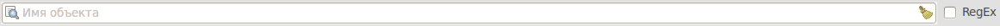
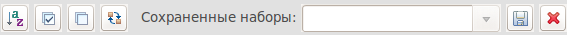
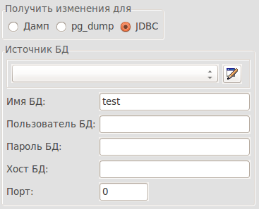

Редактор служит основным инструментом для манипулирования проектом. Он позволяет сравнивать проект с:
Редактор содержит 2 вкладки:
Сохранение, обновляет файлы проекта

Сравнение, позволяет формировать скрипт наката, для приведения сравниваемого объекта в соответствие с объектом, находящимся в проекте.

Редактор поддерживает поиск объектов по имени, при установке галочки RegEx можно исползовать регулярные выражения.

Реализована сортировка, а также возможность запоминания выбора элементов с помощью наборов, для этого нужно выбрать в таблице элементы в поле сохраненные наборы ввести имя набора, и нажать на значок сохранить. Для восстановления выбора, нужно просто выбрать набор из списка.

Здесь можно управлять с чем сравнивать проект:
